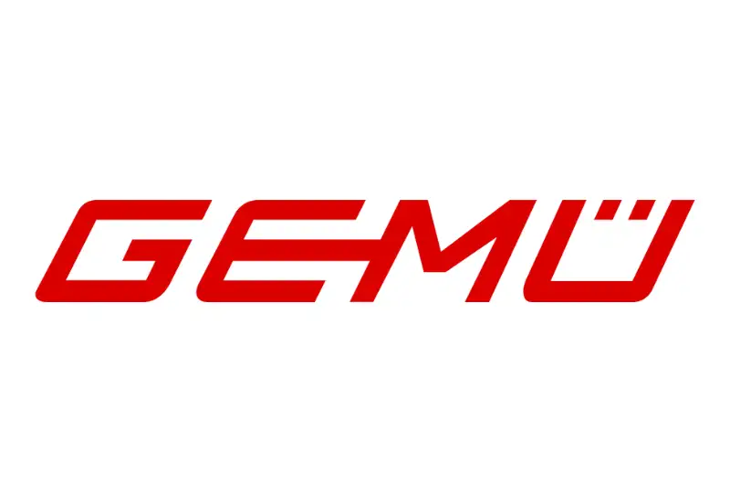
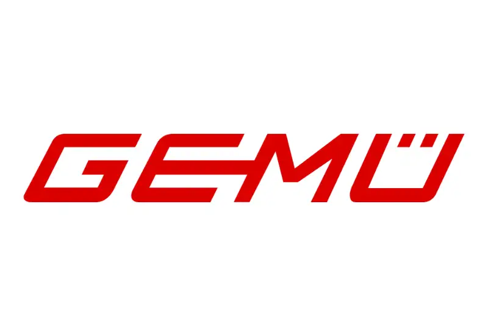

Groepsrondleiding via smartphone en internet
Geef je een groepsrondleiding op een luide locatie? Of waar je bijzonder stil moet praten?
Schrik je van de prijs van een conventioneel draadloos rondleidingssysteem?
Nubart® Live is wat je nodig hebt. Het is een webgebaseerde oplossing die naadloos werkt op de smartphones van deelnemers zonder dat je een app hoeft te downloaden. Nubart Live is zeer eenvoudig te gebruiken, zelfs voor deelnemers die niet technisch onderlegd zijn.
Een meeneemkaart zorgt voor de verbinding tussen de bezoeker en de gids. De smartphone van de gids fungeert als zender en de smartphone van de bezoeker als ontvanger. Zo eenvoudig is het!

Voeg AI-aangedreven simultaanvertaling toe
Wilt u verder gaan? Gebruik Nubart LIVE om uw rondleidingen om te zetten in meertalige ervaringen met onze geavanceerde AI-vertalingsadd-on.
Hoe werkt het:
Hetzelfde naadloze QR-codescanproces als bij Nubart LIVE
Deelnemers selecteren eenvoudig hun voorkeurstaal:
de oorspronkelijke taal van de gids om hun natuurlijke stem te horen
of
een van de verschillende talen die beschikbaar zijn voor realtime AI-vertaling.
Bedien internationale groepen zonder meerdere tolken in te huren. Eén gids kan nu effectief communiceren met bezoekers die verschillende talen spreken.

Eenvoudiger kan het niet
Waarom een rondleidingssysteem als iedereen een smartphone heeft?
Gemakkelijk te bedienen
Zowel bezoekers als de gids scannen de QR-code op de kaarten. Dat is alles! Geen registratie of app download nodig. (Alleen de gids moet inloggen).
Betaalbaar
Ons basispakket van 500 tickets kost minder dan het inhuren van een groepsreis-systeem en is voldoende voor veel tours.
Anoniem
Je bezoekers hoeven geen persoonlijke gegevens op te geven om Nubart Live te gebruiken. Het is volledig anoniem!
AI-vertalingn
Leidt u een meertalige groep? Geen probleem! Voeg eenvoudig onze live vertaalfunctie toe en iedereen kan meedoen, ongeacht hun moedertaal.
Learn more
Onderzoeksfunctie
Je gasten kunnen de gids op elk moment een vraag stellen zonder hem te onderbreken: De gids heeft op elk moment toegang tot de lijst met verzamelde vragen.
Hoe het werkt
Gemakkelijk te vervoeren
Een koffer met apparatuur voor een groepsrondleiding is zwaar om te dragen en aantrekkelijk voor dieven. Onze kaarten niet!
Hygiënisch
Apparatuur voor groepsrondleiding moet na elk gebruik worden ontsmet. Niet onze kaarten!
Milieuvriendelijk
Apparaten produceren schadelijk elektronisch afval. Onze kaarten worden gedrukt op FSC-karton met CO2-compensatie.
Vragen voor de gids? Geen probleem
Met de meeste standaard groepsbegeleidingssystemen (apparaten) kunnen gasten geen vragen stellen.
Andere hebben een talkbackfunctie waarmee de gast een vraag kan stellen aan de hele groep. Verlegen deelnemers hebben de neiging zich in te houden, terwijl de andere deelnemers de gids soms onderbreken met eindeloze vragen, waardoor de hele ervaring bedorven wordt.
Nubart Live biedt een niet-invasieve oplossing waarbij de vragen worden verzameld op de smartphone van de gids, zodat hij ze op het juiste moment kan beantwoorden.
Indien u de module voor gelijktijdige vertaling heeft aangeschaft, worden de vragen automatisch vertaald.
Deelnemers

Gids

Bekijk de gebruikscases van Nubart Live
Gebruikscases

Fabrieks- en bedrijfsrondleidingen
Geef je bezoekers een kosteneffectieve rondleiding over je fabrieksvloer: Door gebruik van een ‘unidirectionele’ microfoon voor smartphones is Nubart Live ideaal voor fabrieksrondleidingen in lawaaiige omgevingen.

Rondleidingen door de stad
Nubart Live is een eenvoudig en betaalbaar systeem om groepen door een stad te leiden:
De stem van de gids overstemt het verkeerslawaai en het maakt niet uit hoe ver weg de deelnemers zijn.

Toegankelijkheid voor slechthorenden
Nubart Live helpt je om je rondleidingen inclusiever te maken: Het gebruik van een koptelefoon op een smartphone zorgt voor een veel betere luisterervaring voor mensen met gehoorproblemen (geen interferentie door achtergrondgeluiden, volume aanpassen, enz.)
Vertrouwen ons


 



Veelgestelde vragen
FAQ
stappen Eerste stappen
Tijdens de tour
Wanneer u een groep als gids opent, raden wij u aan om enkele extra kaarten te scannen voor het geval iemand te laat komt. In dat geval kunt u de te late deelnemer eenvoudig een van de reeds gescande kaarten overhandigen.
In dat geval geeft u de te late deelnemer gewoon een van de reeds gescande kaarten. Dat is alles – hij kan zich onmiddellijk bij de groep voegen.
Zodra u de groep sluit, kunt u deze extra kaarten opnieuw gebruiken voor de volgende tour. Kaarten verliezen hun overdraagbaarheid pas wanneer de deelnemers ze zelf scannen, niet wanneer de gids ze scant.
De latentie wordt beïnvloed door de prestaties van de smartphone, de verbindingskwaliteit en de mobiele provider.
Als de gids echter zachtjes spreekt, is de latentie nauwelijks waarneembaar – de deelnemers horen vooral de versterkte stem uit hun smartphone en niet de echo van de natuurlijke stem van de gids.
De groep blijft verbonden. Wanneer u het gesprek hebt beëindigd, keert u terug naar de browser. Als bij sommige deelnemers in plaats van groen een rood lampje brandt, tikt u op 'Opnieuw laden' – iedereen wordt opnieuw verbonden zonder dat ze hun QR-codes opnieuw hoeven te scannen.
Opmerking: als u op Android vergeet om het geluid te dempen voordat u de oproep aanneemt, kunnen de deelnemers mogelijk uw kant van het gesprek horen. Op de iPhone horen ze niets.
Meer informatie over het gebruik van Nubart LIVE tijdens groepsreizen.
AI-vertaaladd-on
Raadpleeg onze handleiding voor meer informatie.
Google Translate kan weliswaar korte audiofragmenten afspelen, maar is niet ontworpen om een continue, handsfree audiostream te leveren. Elke bezoeker moet de app individueel beheren, de microfoon starten en stoppen, het afspelen activeren en de kleine tekst op zijn scherm lezen. Timing, onderbrekingen en vertragingen variëren van persoon tot persoon, wat in een groep snel tot verwarring kan leiden.
Nubart LIVE is speciaal ontwikkeld voor rondleidingen en fabrieksbezoeken. Een gids spreekt in een microfoon en alle deelnemers ontvangen synchroon dezelfde audiostream op hun eigen smartphone – zonder dat ze een app of een bepaalde talencombinatie hoeven te downloaden.
Met de optionele AI-vertaaladd-on wordt de vertaling rechtstreeks gekoppeld aan de live audiostream van de gids. De deelnemers selecteren eenvoudig hun voorkeurstaal en nemen samen deel aan de rondleiding, in plaats van dat elke persoon een aparte vertaalapp moet gebruiken.
Kortom: Google Translate is ideaal voor individueel gebruik; Nubart LIVE is ontwikkeld voor gezamenlijke, gesynchroniseerde rondleidingen.
Technische details
Dit heeft echter geen invloed op de groepsleden: voor hen is het batterijverbruik niet veel hoger dan bij het luisteren naar een podcast of een audioboek. Een uur continu gebruik verbruikt bijvoorbeeld 8% van de batterij van een vier jaar oude Android-smartphone.
Kaarten
U stuurt ons de afbeeldingen, logo's en andere elementen die u op uw kaart wilt hebben en onze ontwerper maakt verschillende ontwerpvoorstellen waaruit u kunt kiezen.
Bekijk onze prijzen voor Nubart LIVE
Indien u uw kaarten liever individueel wilt ontwerpen, is de minimale bestelhoeveelheid 3.000 stuks. Bekijk onze prijzen voor Nubart LIVE